Project 3
Fun with Flow Models
Part A: Exploring the Power of Flow Models
1.1: Constructing Noisy Training Inputs
For this part, I built noisy training inputs using my image of a street in Tokyo at t = 0.25, 0.50, and 0.75. I made use of the equation xt = (1 − t)ε + t · x1. What we can see is that at the lowest t = 0.25 value, the image is dominated by noise while at t = 0.75, most of the detail is still somewhat clear.
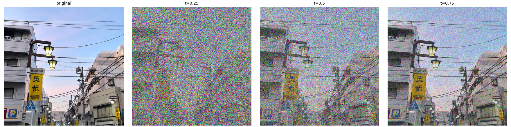
1.2: Classical Denoising
Adding the Gaussian blur helps to remove some of the noise with a drawback of also blurring out real detail from the image. We can see this with precise details like wires disappearing so the result is still noisy and blurred.
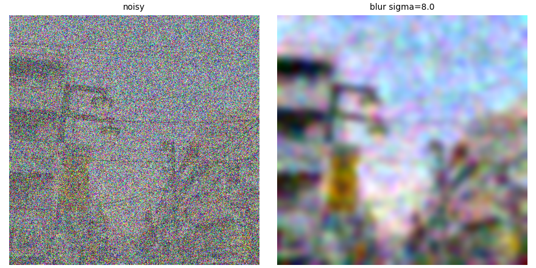
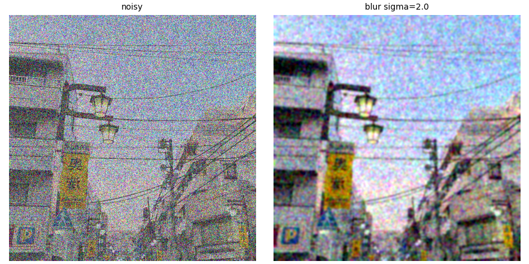
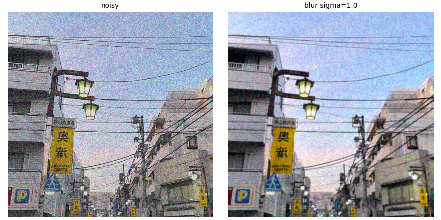
1.3: One-Step Denoising
Doing a one step denoising gives a much cleaner image than blurring. We do this by making use of the equation x̂1 = xt + (1 − t) · vθ. It is the most effective at a high t = 0.75. At a lower t = 0.25, detail and fine texture are lost or smudged (like with the wires).
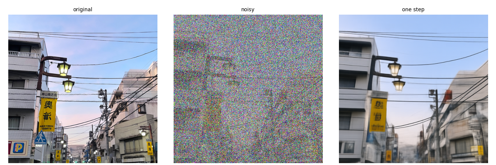
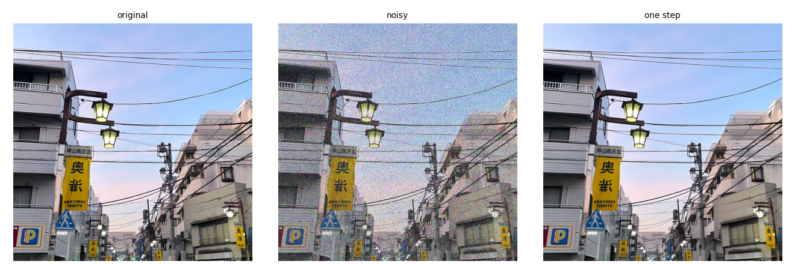
1.4: Visualizing Velocity
The predicted update (1 − t)v̂t closely matches the ground-truth update. They both show a faint version of the scene all grayed out. The error heat map itself highlights the fine details and edges, similar to what a high frequency image looks like. The higher the t, the more grayed out the images are.
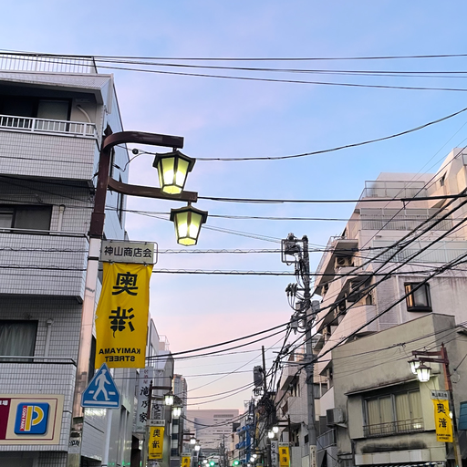
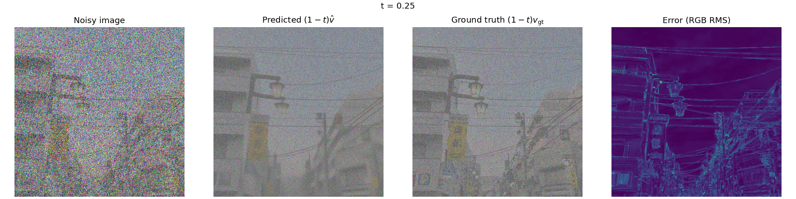
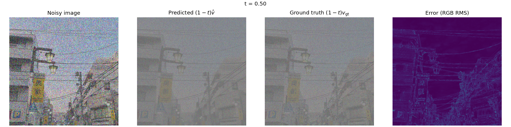
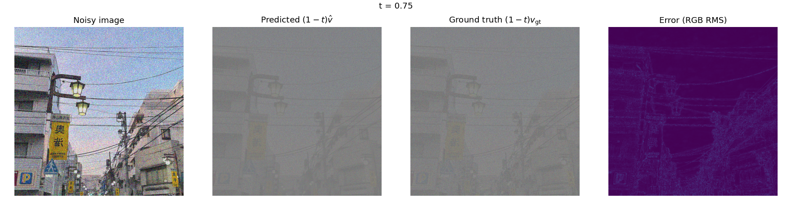
1.5: Iterative Denoising with Euler Sampling
Below, we see Euler samples of the street in Tokyo using 25 steps with step size h = 0.02 and starting from t = 0.50. The final result at t = 1.00 is the closest to the original image with few issues compared to the original. Using this iterative method works a lot better than classical denoising and one-step denoising as it allows the model to fix mistakes little by little, rather than conducting massive fixes (which results in blurs, smudges, and lost details).
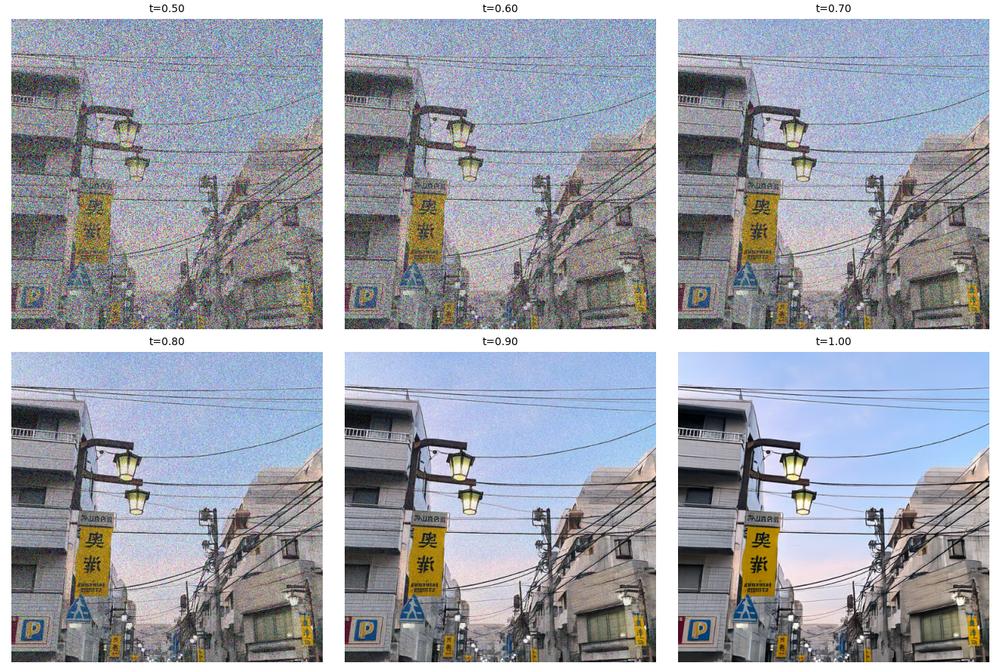
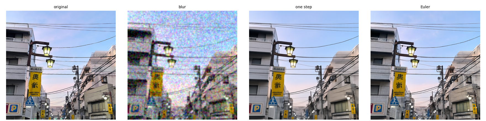
1.6: Generating Images from Noise
Using our Euler sampling from before, and the prompt "a high quality photo" at t = 0, I generated the images of the 5 people below. It appears that this broad prompt favors generating images of people, though some are extremely distorted and others have uneven proportions which simulate the uncanny valley.

2.1: Classifier-Free Guidance
Below we use Classifier-Free Guidance which runs the model twice at each step. One run uses the prompt vc and the other uses a null condition as the prompt (empty prompt). We then combine them together which pushes the image towards the prompt description. All 5 samples below use the same seeds as the 5 images from above. Comparing the two, we can see that the images here are a lot less distorted than in 1.6, with none of the faces being distorted or having massively uneven proportions. The images produced with CFG are a lot sharper and realistic as well while also being less varied in terms of perspective as they are all simple headshots. Overall, Classifier-Free Guidance is a huge improvement from our results in 1.6.

3.1: Image-to-Image Editing
In the examples below, we noise our starting image to a start time t, and then run Classifier-Free Guidance with Euler sampling from t to 1 using "a high quality photo" as the prompt on the 3 examples (the Campanile, a street in Tokyo with a truck, and another street in Tokyo). From the examples, we can see that lower t values use more noise than the real image, resulting in images that create new details or scenes. For instance, the buildings in the background of Tokyo become a tree, a mountain, or a washing machine. For high t values, the image starts to resemble the original as a lot more of it survives when noised, showing that as t increases, the image will look more like the original. The original appears to start appearing more around t = 0.14.

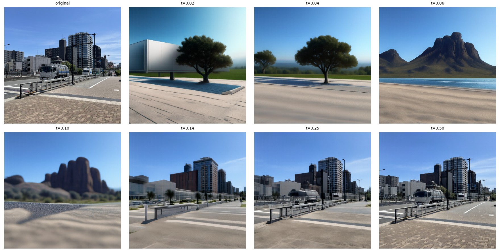
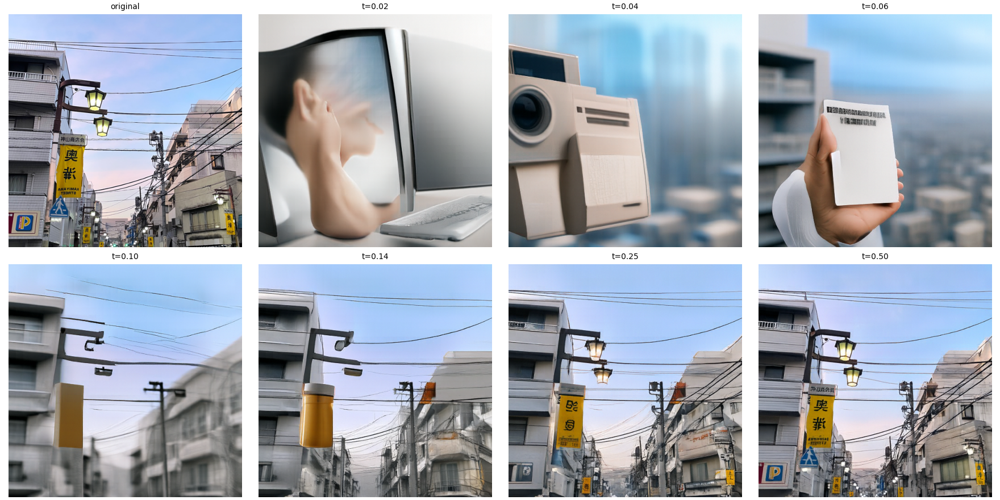
Editing Hand-Drawn and Web Images
The same trend can be seen with the web image and hand-drawn images below. Our blue crying emoji becomes a laptop of sorts at low t values while reappearing at high t values. The same applies for our little robot man in the 3rd example who becomes a sticky note at t = 0.02. Our abstract shapes example in the 2nd example shows a similar pattern, with only the green circle remaining at t = 0.02 and the arrow becoming a paint brush of sorts at lower t values as well.
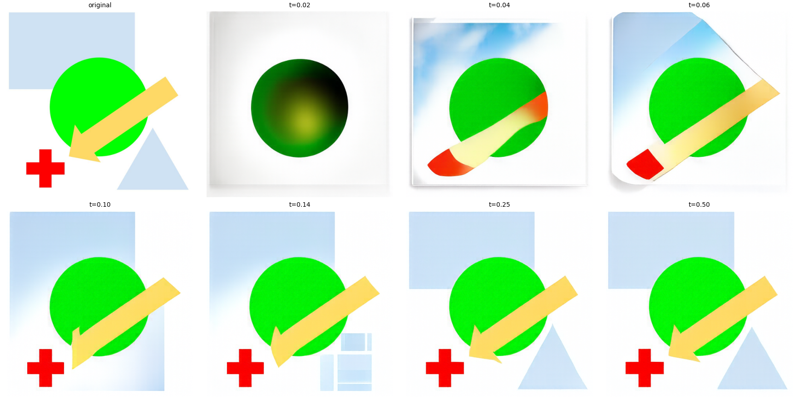
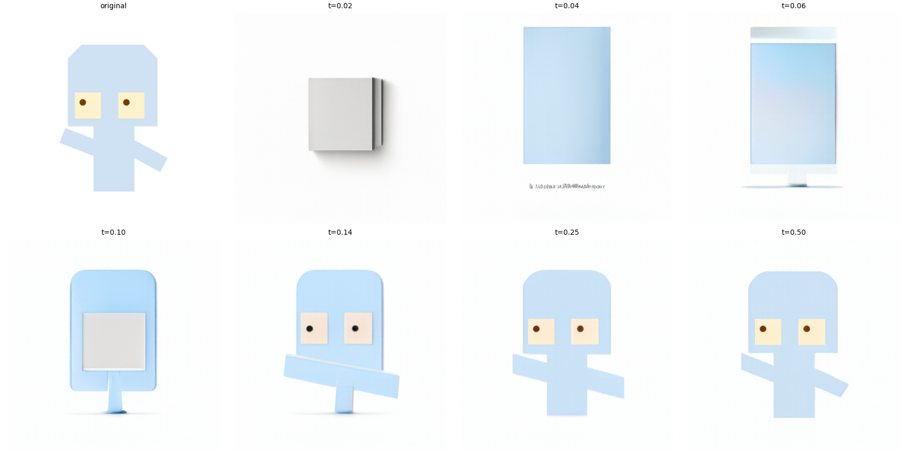
3.2: Text-Guided Image Editing
Below, we did the same process as in 3.1 but with my own custom prompts. For the campanile, I directed it to create a photo of a q-tip in the sky. At low t-values, it did transform the campanile into objects resembling a q-tip, ultimately becoming a lollipop at t = 0.02. For our first Tokyo street image, I prompted it with "a photograph of a boat floating on a flooded city". At t = 0.14 and below, this image is recreated very well with more of the original being present, represented as wilder waves. For our last image of our street in Tokyo, the prompt was "A traditional japanese street with traditional wooden buildings" which it recreated very well at lower t values, gradually becoming more modern buildings as t approached 0.50. Overall, the campanile q-tip was the weakest example, possibly because the model didn't know how to draw out a q-tip exactly, making it create other objects which were similar in shape to it (like a lollipop or thermometer).
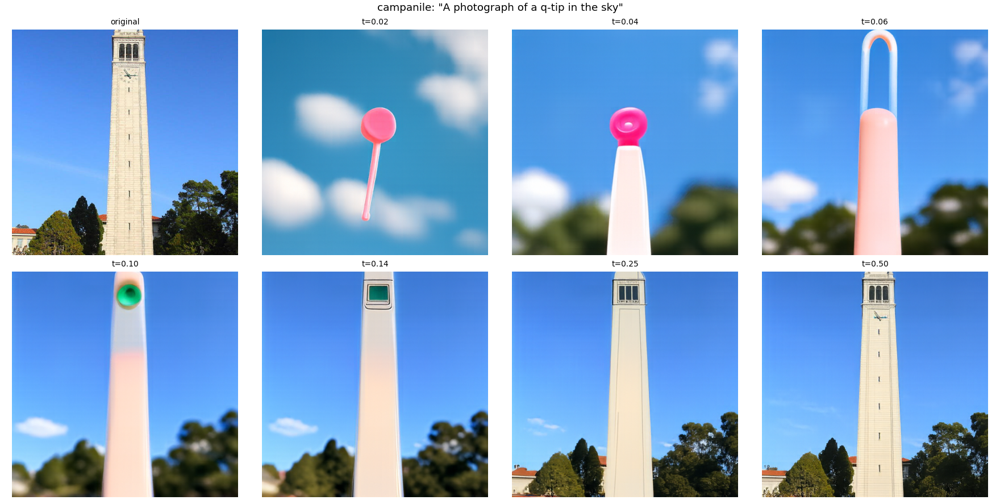
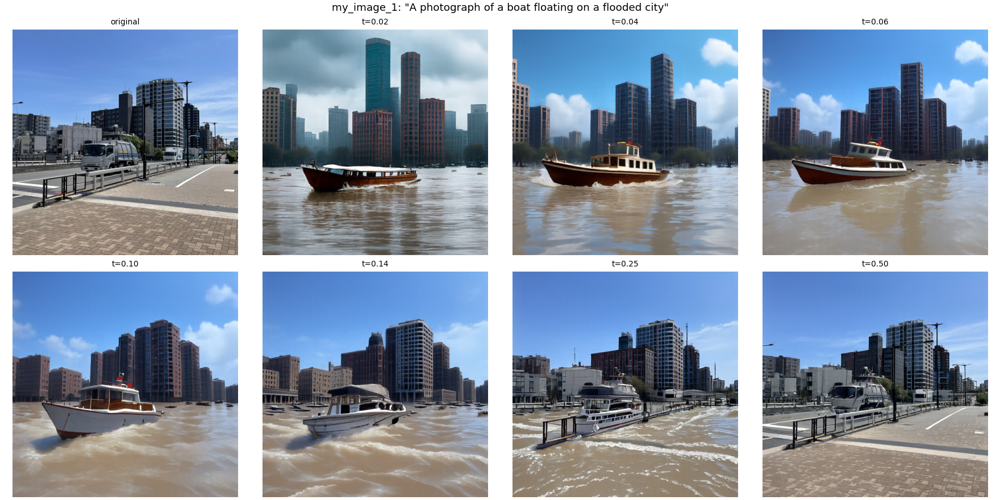
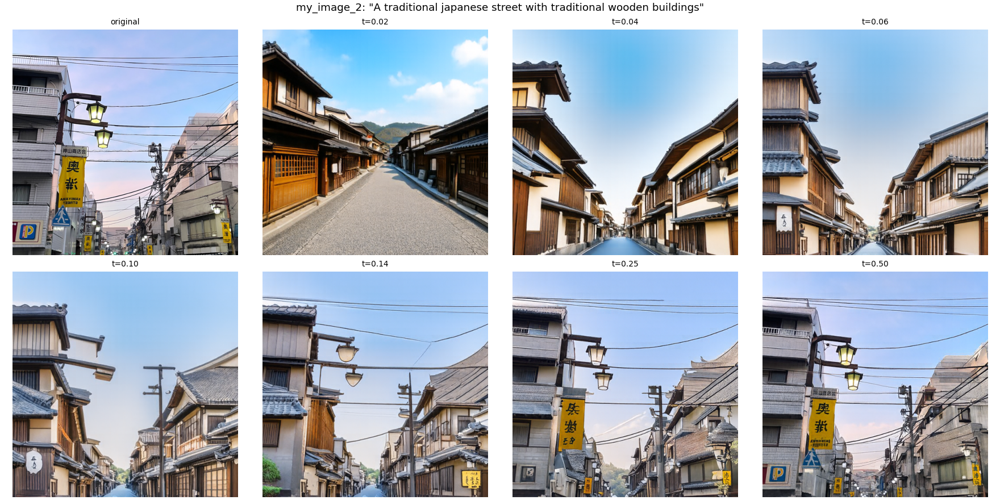
3.3: Visual Anagrams
Below are examples of Visual Anagrams. For each step, we used v1 which was a Classifier Free Guidance image for prompt 1, and v2 was another Classifier Free Guidance image reversed 180 degrees for prompt 2. We then averaged the two of them using v = (v1 + v2) / 2 and took Euler steps with it to form our output. This resulted in an image looking like prompt 1 upright and prompt 2 flipped, like the old man and campfire image in the spec that I generated. The other two examples are the same image with a cat and an owl where the cat's face appears like the owl's feet upside down, and the third example is using a snake and a ferret where the opposing animal's head looks like their tail.
Example from the spec

My illusions
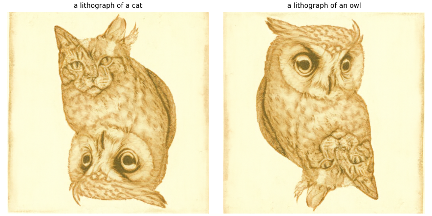
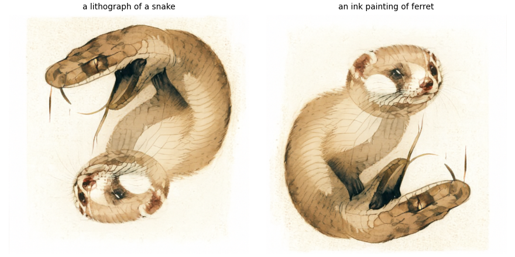
3.4: Hybrid Images
For the hybrid images, I took the Classifier Free Guidance velocities for two separate prompts, and took the low frequency image of v1 and high frequency image of v2 (original - blur using a gaussian blur, kernel size = 265, and σ = 16) and add them together like we did in project 2 before conducting the Euler step. This allows us to see the high frequency image from up close, and the low frequency image from afar. The first example is the example in the spec replicated of the waterfall up close and skull from far away. Example 2 is a bouquet of flowers close up, and a woman from far away which you can see with the flowers becoming the woman's hair, eyes, and nose. The 3rd example is of a close up image of coral, which from far away looks like a sea turtle. This one works by making use of both the shape of the groupings of the coral to create the shape of a sea turtle, and also making use of the color of the coral to effectively color in the turtle as well, separating its flippers and head from its shell.
Example from the spec

My hybrids
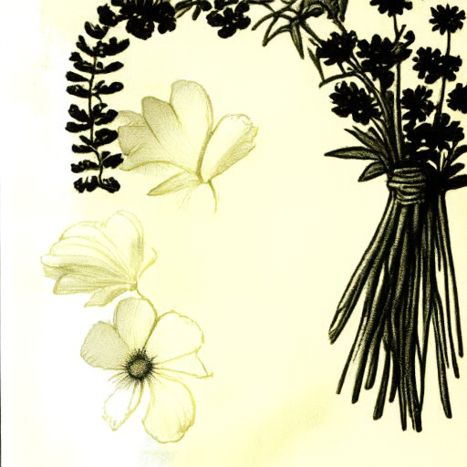
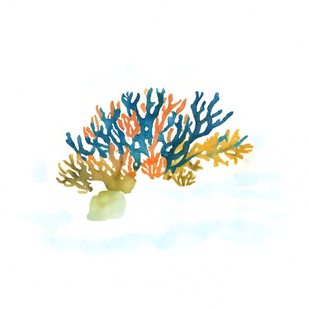
Part B: Flow Matching from Scratch
1.2: Noising Process
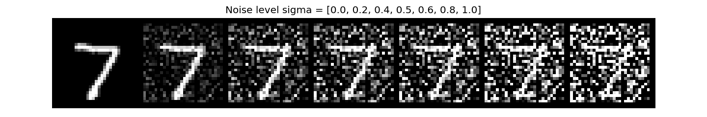
1.2.1: Training
σ = 0.5, D = 128, batch size 256, Adam with lr 1e-4, 5 epochs.
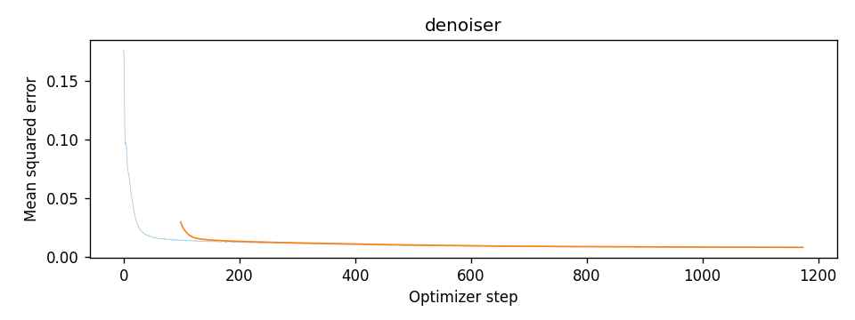
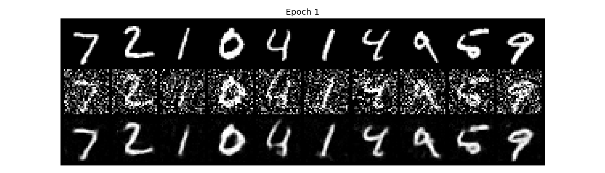
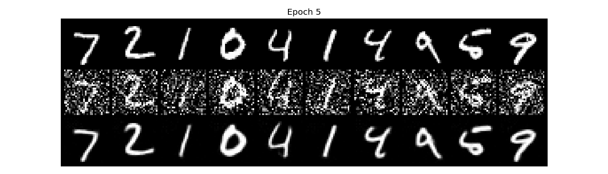
We can see that after one epoch, the denoised digits are recognizable but slightly blurry. However, after 5 epochs they appear very clear and match the original image very closely, though some detail is lost like the little speck inside the circle of the digit 9.
1.2.2: Out-of-Distribution Testing
From the image above, we can see that the denoiser works the best at σ = 0.5 as the model was trained on that value. It still worked well from 0.0 to 0.6, however the output did get worse at σ = 0.8 and 1.0 as the model wasn't familiar with seeing that much noise.
1.2.3: Denoising Pure Noise
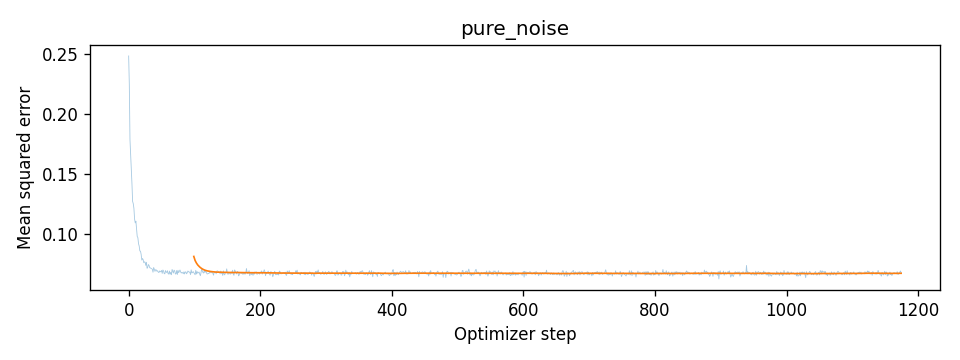
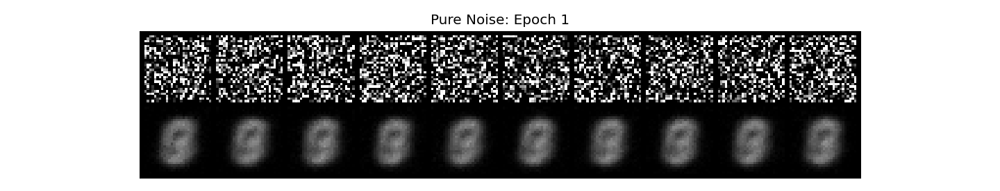
When using pure noise, we can see that every output is the same blurry blob that resembles a mix of digits (9, 8, 3, 0, mostly digits containing or made up of circles). Additionally, the output doesn't appear to change with the input either. This is most likely because the input is pure random noise, which means that it contains no information at all regarding which digit it originated from. As a result, using MSE encourages the model to produce the least amount of error which comes out as a blurry combination of multiple digits.
2.1–2.3: Time-Conditioned UNet
D = 64, batch size 64, Adam with lr 1e-2 and ExponentialLR with γ = 0.11/10, 10 epochs, 50 sampling steps.
Below, we make use of a time-conditioned UNet that is also given the time t. It learns which direction to go to make a pure noise image look more like a digit by taking many small steps. From the images below, we can see that by epoch 5, we can see the digits (though a bit scrambled) while they are a lot more well-formed in epoch 10 as a whole. Though some do still remain messy like some of the examples in the bottom right of the grid as the model can't decide which direction to go in.
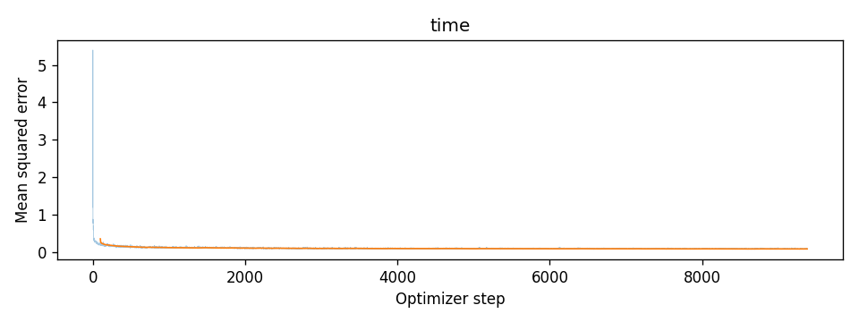
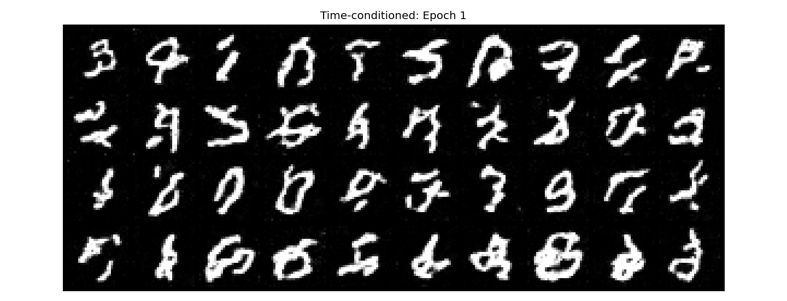
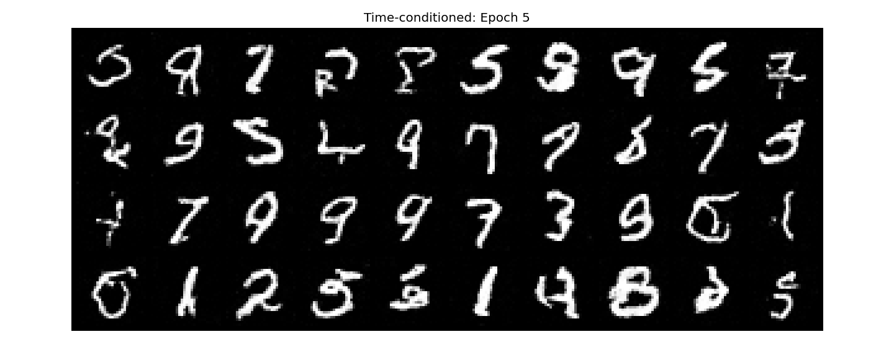
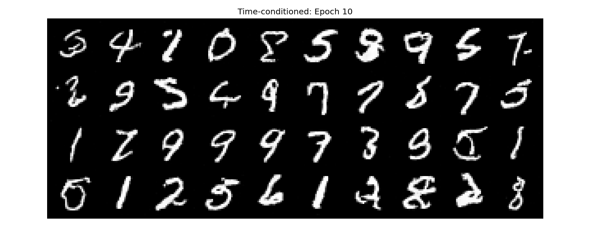
2.4–2.6: Class-Conditioned UNet
Here, we use the same setup as above with 300 sampling steps and a class dropout puncond = 0.1 as well as classifier-free guidance with γ = 5.
Now, we also tell the model which specific digit to make. For example, the digit '0'. We also hide the labels we usually pass in 10% of the time to allow the model to learn how to generate a digit without using a label. As a whole, the samples are clean and correct with all the digits appearing correctly from epoch 5, and appearing clear by epoch 10 for all digits 0 to 9.
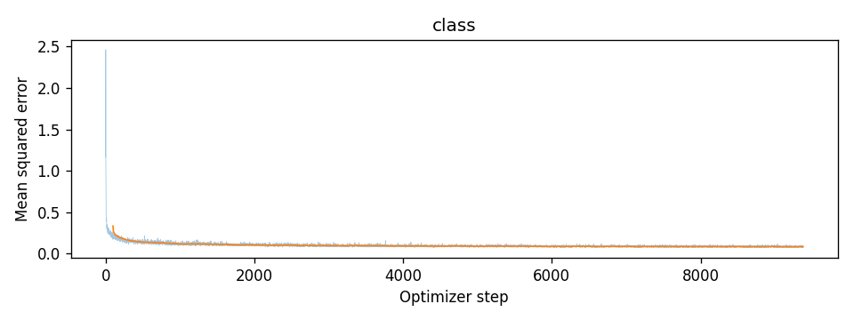
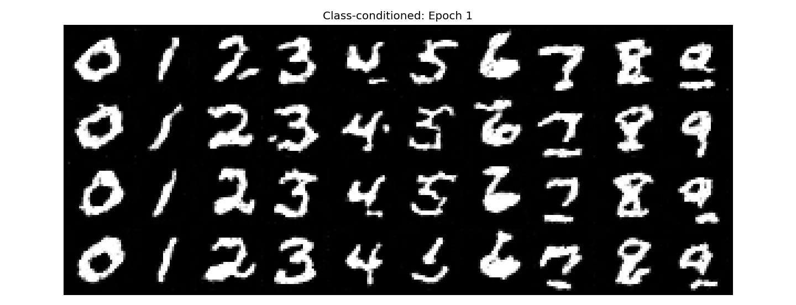
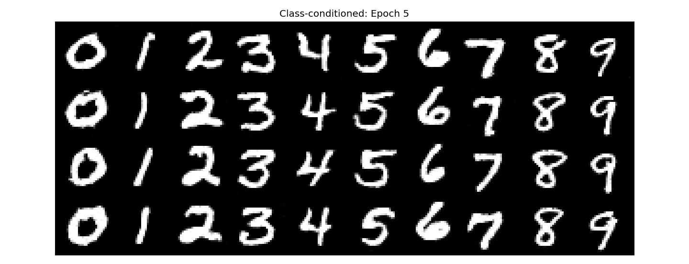
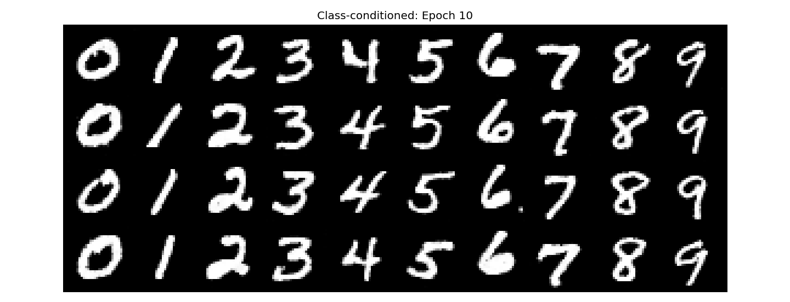
Removing the Learning Rate Scheduler
In the below outputs, instead of using the exponential scheduler that was being used previously, a constant learning rate of 1e-3 was used instead. In the original run, the learning rate started at 1e-2 and shrank a smaller amount each epoch which encouraged earlier runs to learn faster and later runs to be used for smaller microadjustments. By getting rid of the scheduler, the shrinking was removed causing the learning rate to be fixed throughout every epoch (constant at 1e-3). From the outputs below, without the learning rate scheduler, the model ended up generating the digits much more clearly at epoch 1 (with most of them clearly identifiable) which we see happens at epoch 5 but not epoch 1 for the run with the learning rate scheduler.
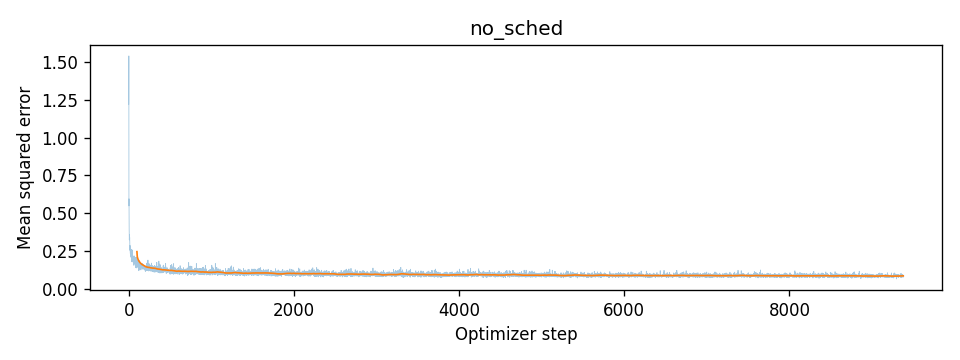
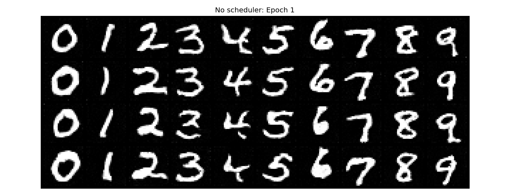
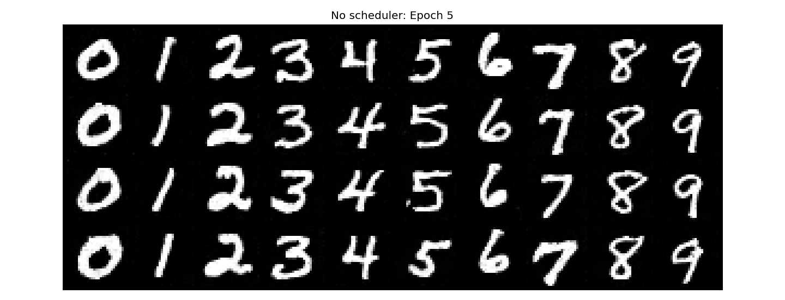
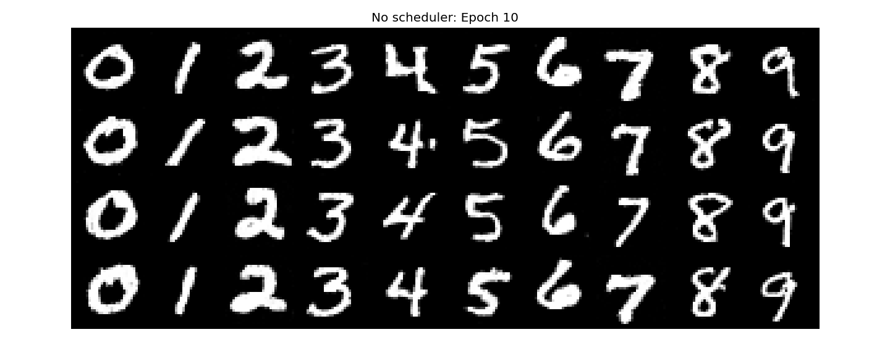